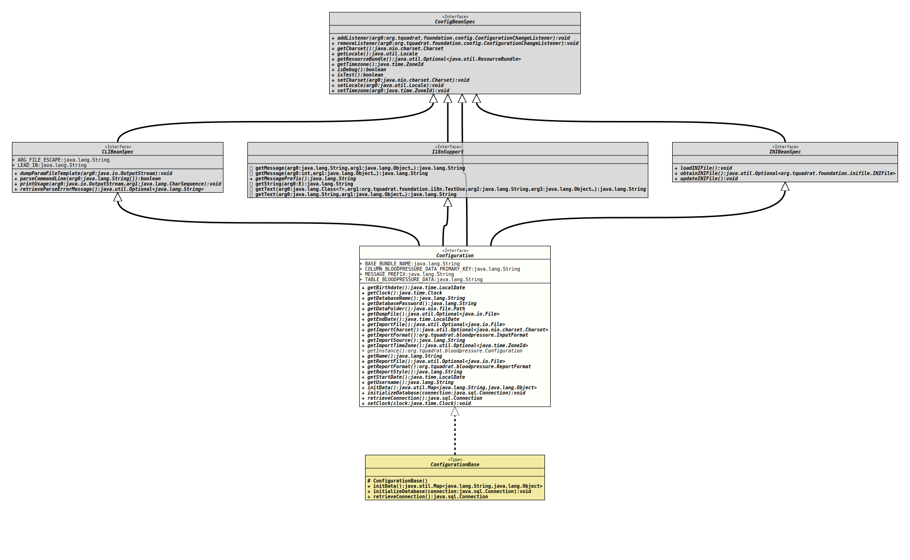

- All Superinterfaces:
org.tquadrat.foundation.config.CLIBeanSpec,org.tquadrat.foundation.config.ConfigBeanSpec,org.tquadrat.foundation.config.I18nSupport,org.tquadrat.foundation.config.INIBeanSpec
- All Known Implementing Classes:
ConfigurationBase
@ConfigurationBeanSpecification(baseClass=ConfigurationBase.class,
synchronizeAccess=false)
@INIFileConfig(comment="Settings for the Blood Pressure Statistics application",
mustExist=false,
path="${dataFolder}bloodpressure.ini")
@ClassVersion(sourceVersion="$Id: Configuration.java 123 2022-02-13 19:33:21Z tquadrat $")
@API(status=STABLE,
since="0.0.1")
public interface Configuration
extends org.tquadrat.foundation.config.CLIBeanSpec, org.tquadrat.foundation.config.ConfigBeanSpec, org.tquadrat.foundation.config.I18nSupport, org.tquadrat.foundation.config.INIBeanSpec
The configuration bean specification for the Blood Pressure Statistics
application.
- Author:
- Thomas Thrien (thomas.thrien@tquadrat.org)
- Version:
- $Id: Configuration.java 123 2022-02-13 19:33:21Z tquadrat $
- Since:
- 0.0.1
- UML Diagram
-

UML Diagram for "org.tquadrat.bloodpressure.Configuration"
{kind=link}
-
Field Summary
FieldsModifier and TypeFieldDescriptionstatic final StringThe name of the resource bundle for the texts and messages: "org.tquadrat.bloodpressure.TextsAndMessages".static final StringThe name for the key column of the blood pressure data table: "MEASURING_DATETIME".static final StringThe message prefix for messages from this application: "BPS".static final StringThe table name for the blood pressure data: "BLOODPRESSURE_DATA".Fields inherited from interface org.tquadrat.foundation.config.CLIBeanSpec
ARG_FILE_ESCAPE, LEAD_IN -
Method Summary
Modifier and TypeMethodDescriptionReturns the birthdate of the person whose blood pressure data is processed.Returns the name of the database.Returns the password for the access to the database.Returns the folder that holds the data for the program.Returns the destination file for a dump from the database.Returns the end date for a report.Returns the encoding for the file to import.Returns the file to import.Returns the format for the file to import.Returns the source of the file to import.Returns the time zone for the record timestamps in the file to import.static ConfigurationReturns the instance of the configuration bean.getName()Returns the name of the person whose blood pressure data is processed.Returns the destination for a report.Returns the report format.Returns the report style.Returns the start date for a report.Returns the name of the current user.initData()Initialises the configuration bean.voidinitializeDatabase(Connection connection) In case a new database was created, a call to this method will initialise it.Retrieves the connection to the database.Methods inherited from interface org.tquadrat.foundation.config.CLIBeanSpec
dumpParamFileTemplate, parseCommandLine, printUsage, retrieveParseErrorMessageMethods inherited from interface org.tquadrat.foundation.config.ConfigBeanSpec
addListener, getCharset, getLocale, getResourceBundle, getTimezone, isDebug, isTest, removeListener, setCharset, setLocale, setTimezoneMethods inherited from interface org.tquadrat.foundation.config.I18nSupport
getMessage, getMessage, getMessagePrefix, getString, getText, getTextMethods inherited from interface org.tquadrat.foundation.config.INIBeanSpec
loadINIFile, obtainINIFile, updateINIFile
-
Field Details
-
BASE_BUNDLE_NAME
The name of the resource bundle for the texts and messages: "org.tquadrat.bloodpressure.TextsAndMessages".- See Also:
-
COLUMN_BLOODPRESSURE_DATA_PRIMARY_KEY
The name for the key column of the blood pressure data table: "MEASURING_DATETIME". -
MESSAGE_PREFIX
The message prefix for messages from this application: "BPS".- See Also:
-
TABLE_BLOODPRESSURE_DATA
The table name for the blood pressure data: "BLOODPRESSURE_DATA". The schema is the default schema.- See Also:
-
-
Method Details
-
getBirthdate
@Option(name="--birthdate", aliases="--birthday", metaVar="DATA", usageKey="org.tquadrat.bloodpressure.Configuration.USAGE_Birthdate") @INIValue(group="Owner", key="birthdate", comment="The birthdate of the person whose blood pressure data is processed") LocalDate getBirthdate()Returns the birthdate of the person whose blood pressure data is processed.- Returns:
- The birthdate.
-
getDatabaseName
Returns the name of the database.- Returns:
- The name of the database that is used by this application.
-
getDatabasePassword
Returns the password for the access to the database.- Returns:
- The database password.
-
getDataFolder
Returns the folder that holds the data for the program.- Returns:
- The data folder.
-
getDumpFile
@Option(name="--dump", metaVar="FILE", usageKey="org.tquadrat.bloodpressure.Configuration.USAGE_Dump") Optional<File> getDumpFile()Returns the destination file for a dump from the database. An existing file will be overwritten.- Returns:
- An instance of
Optionalthat holds the dump file.
-
getEndDate
@Option(name="--reportEnd", metaVar="DATE", usageKey="org.tquadrat.bloodpressure.Configuration.USAGE_ReportEnd") LocalDate getEndDate()Returns the end date for a report.- Returns:
- The end date.
-
getImportFile
@Option(name="--import", metaVar="FILE", usageKey="org.tquadrat.bloodpressure.Configuration.USAGE_Import") Optional<File> getImportFile()Returns the file to import.- Returns:
- An instance of
Optionalthat holds the file to import.
-
getImportCharset
@Option(name="--importEncoding", metaVar="CHARSET", usageKey="org.tquadrat.bloodpressure.Configuration.USAGE_ImportEncoding") Optional<Charset> getImportCharset()Returns the encoding for the file to import.- Returns:
- An instance of
Optionalthat holds the import encoding.
-
getImportFormat
@Option(name="--importFormat", metaVar="FORMAT", usageKey="org.tquadrat.bloodpressure.Configuration.USAGE_ImportFormat") InputFormat getImportFormat()Returns the format for the file to import.- Returns:
- The import format.
-
getImportSource
@Option(name="--importSource", metaVar="ORIGIN", usageKey="org.tquadrat.bloodpressure.Configuration.USAGE_ImportSource") String getImportSource()Returns the source of the file to import.- Returns:
- The import source.
-
getImportTimeZone
@Option(name="--importTimeZone", metaVar="TIMEZONE", usageKey="org.tquadrat.bloodpressure.Configuration.USAGE_ImportTimeZone") Optional<ZoneId> getImportTimeZone()Returns the time zone for the record timestamps in the file to import.- Returns:
- The import time zone.
-
getInstance
Returns the instance of the configuration bean.- Returns:
- The configuration bean instance.
-
getName
@Option(name="--name", metaVar="NAME", usageKey="org.tquadrat.bloodpressure.Configuration.USAGE_Name") @INIValue(group="Owner", key="name", comment="The name of the person whose blood pressure data is processed") String getName()Returns the name of the person whose blood pressure data is processed.- Returns:
- The name.
-
getReportFile
@Option(name="--report", metaVar="FILE", usageKey="org.tquadrat.bloodpressure.Configuration.USAGE_Report") Optional<File> getReportFile()Returns the destination for a report. Depending on the selectedReportFormat, this is either a file or a folder. Any existing files will be overwritten.- Returns:
- An instance of
Optionalthat holds the destination file or folder. - See Also:
-
getReportFormat
@Option(name="--reportFormat", metaVar="FORMAT", usageKey="org.tquadrat.bloodpressure.Configuration.USAGE_ReportFormat") ReportFormat getReportFormat()Returns the report format. -
getReportStyle
@Option(name="--reportStyle", metaVar="STYLE", usageKey="org.tquadrat.bloodpressure.Configuration.USAGE_ReportStyle") String getReportStyle()Returns the report style. -
getStartDate
@Option(name="--reportStart", metaVar="DATE", usageKey="org.tquadrat.bloodpressure.Configuration.USAGE_ReportStart") LocalDate getStartDate()Returns the start date for a report.- Returns:
- The start date.
-
getUsername
Returns the name of the current user.- Returns:
- The current user's name.
-
initData
Initialises the configuration bean.- Returns:
- The initialisation data.
-
initializeDatabase
In case a new database was created, a call to this method will initialise it.- Parameters:
connection- The database connection.- Throws:
SQLException- The initialisation of the database failed.
-
retrieveConnection
Retrieves the connection to the database.- Returns:
- The connection to the database.
- Throws:
SQLException- There is a problem with retrieving the database connection.
-